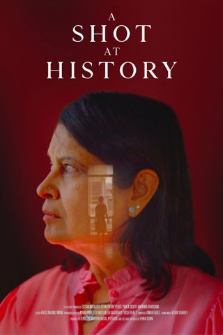
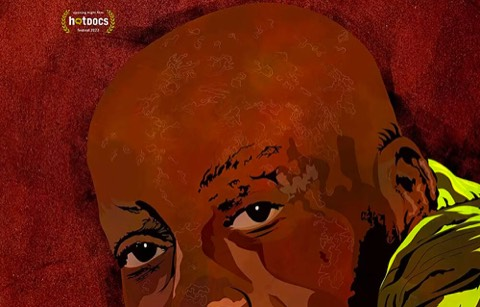

About the film

DC Premiere
November 8, 2026
, 4:55 PM
U.S. Navy Memorial
The Drug in Our Pocket
examines how smartphones, designed to connect us, have radically reshaped childhood, adolescence and mental health. Through intimate conversations with young people, parents, and leading experts, the film reveals a generation that is thoughtful, articulate, and increasingly aware of how digital environments shape their attention, emotions, and sense of self. What would it take to reclaim attention as a form of agency and build culture that supports young people in thinking, relating, and choosing for themselves?
Screening followed by a Q&A with director Anne Sundberg, producer Beth Kojima, executive producer Crystal McCrary McGuire, Casey Mock, and Jenny Anderson, moderated by Maggie Penman of The Washington Post.
Anne Sundberg
Beth Kojima
Crystal McCrary McGuire
Casey Mock
Jenny Anderson
Maggie Penman
At the festival
More films on these topics
 RescueSine Plambech2026 · 90 min
RescueSine Plambech2026 · 90 min Listen to MeStephanie Etienne, Kanika Harris2025 · 77 min
Listen to MeStephanie Etienne, Kanika Harris2025 · 77 min
A Shot at HistoryErika Cohn2024 · 24 min The Smallest PowerAndy Sarjahani2023 · 6 min
The Smallest PowerAndy Sarjahani2023 · 6 min
Into the Weeds: Dewayne “Lee” Johnson vs. Monsanto CompanyJennifer Baichwal2022 · 96 min American PainDarren Foster2022 · 106 min
American PainDarren Foster2022 · 106 min